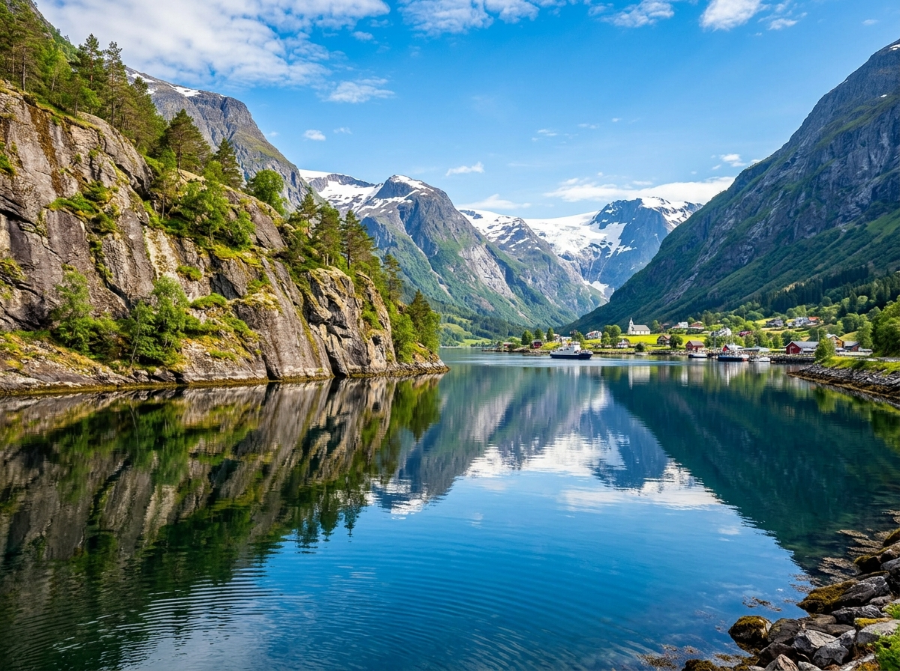
Hier stehen die wichtigsten Daten zu deinem Land. In der App baust du daraus deinen eigenen Steckbrief.
| Hauptstadt | Oslo |
| Kontinent | Europa (Nordeuropa) |
| Sprache | Norwegisch |
| Währung | Norwegische Krone |
| Einwohner | etwa 5,6 Millionen Menschen |
| Fläche | etwa 385.000 km², ein langes, schmales Land, etwas größer als Deutschland |
| Großer Berg | der Galdhøpiggen, mit etwa 2.469 Metern der höchste Berg des Landes |
| Nachbarländer | Schweden, Finnland und Russland |
In Norwegen gibt es viele besondere Orte. Diese vier solltest du kennen.
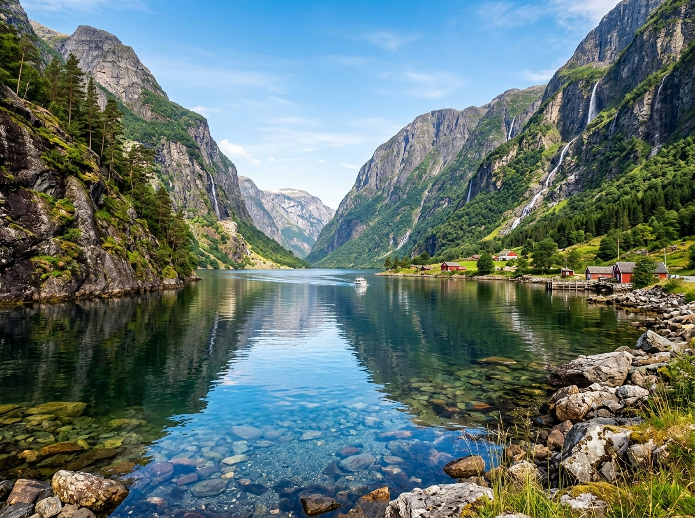
FjordeFjorde sind tiefe, schmale Meeresbuchten. Sie ziehen sich weit ins Land hinein, mitten zwischen die Berge. Die Felswände an den Seiten sind steil und sehr hoch. Viele Menschen finden die Fjorde wunderschön.
Grüne Wörter für die AppMeeresbuchtschmal und tiefsteile Felswändezwischen Bergenwunderschön
NordlichterIm Winter leuchtet der Himmel über Norwegen manchmal in bunten Farben. Man sieht dann Grün, Lila und Rot. Diese Lichter nennt man Nordlichter. Sie entstehen durch winzige Teilchen aus der Sonne.
Grüne Wörter für die Appleuchtender Himmelim Wintergrün und lilaTeilchen aus der Sonnenachts
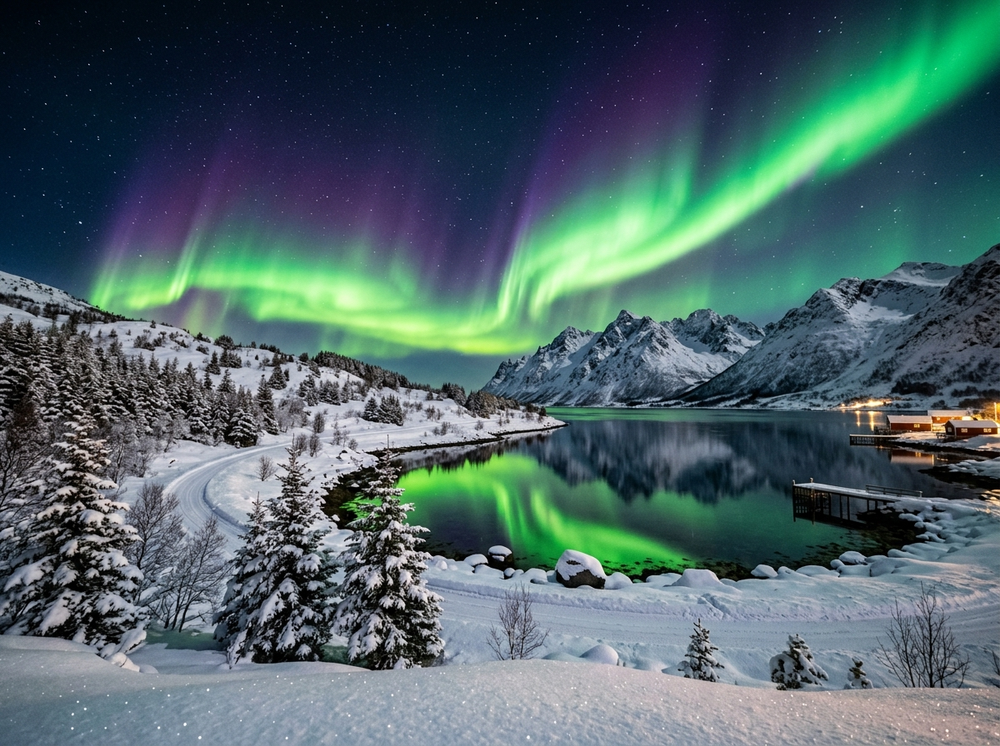
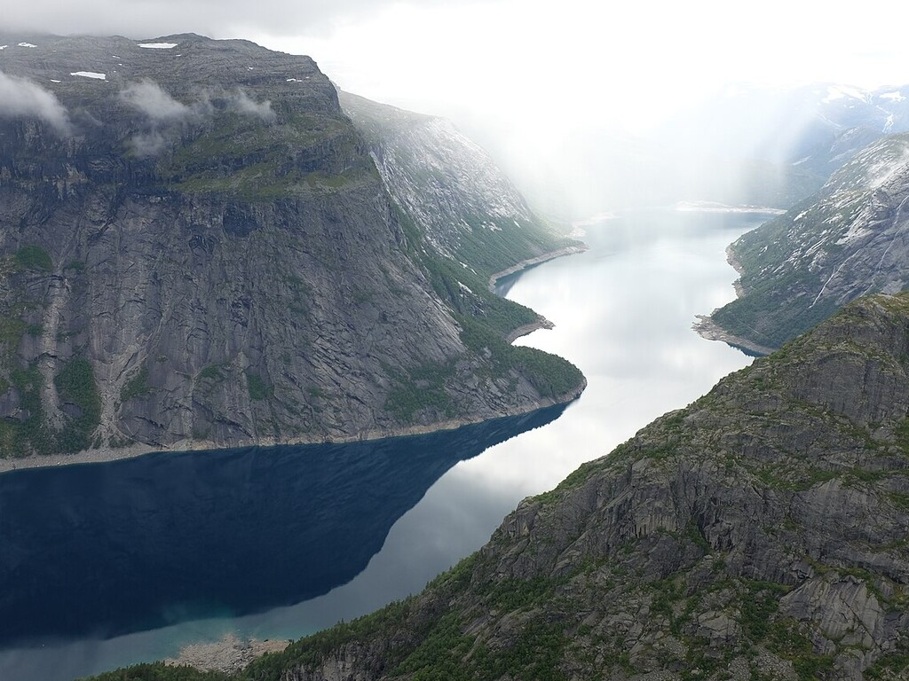
TrolltungaDie Trolltunga ist ein flaches Felsstück. Es ragt wie eine Zunge waagerecht aus einem steilen Berg heraus. Tief unten liegt ein See. Viele Wanderer klettern hinauf und machen dort ein Foto.
Grüne Wörter für die AppFelsstückwie eine Zungehoch über dem Seesteiler BergWanderer
Bryggen in BergenIn der Stadt Bergen stehen bunte alte Holzhäuser direkt am Hafen. Dieser Ort heißt Bryggen. Die Häuser sind schon viele hundert Jahre alt. Heute gehören sie zum Weltkulturerbe.
Grüne Wörter für die Appbunte Holzhäuseram Hafenin Bergensehr altWeltkulturerbe
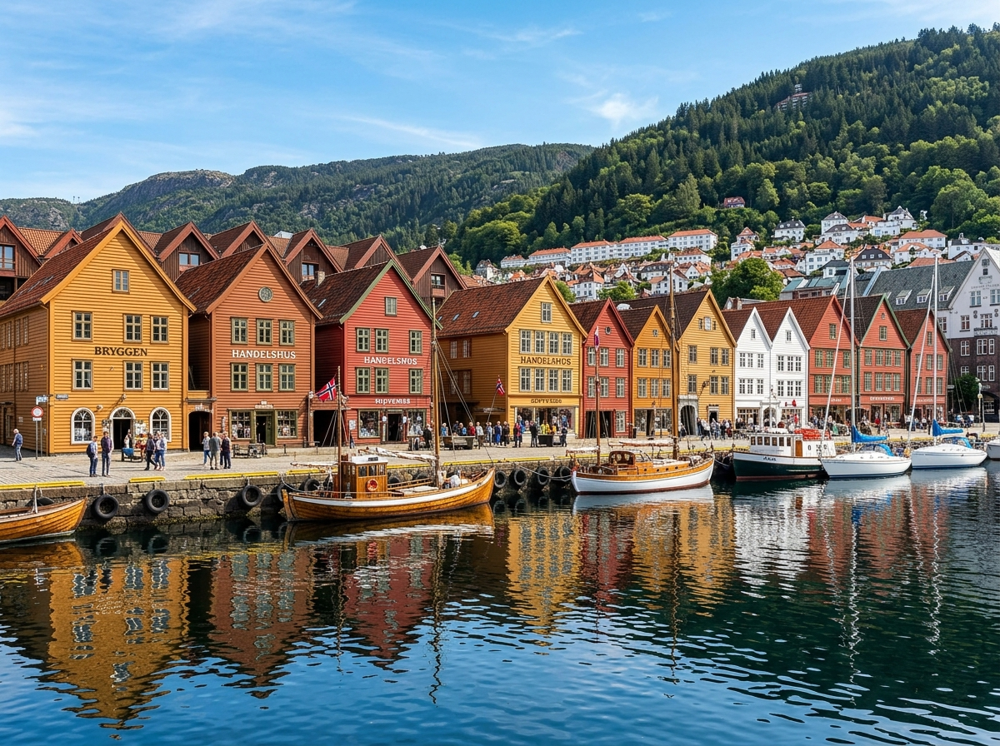
In den Wäldern und Meeren Norwegens leben Tiere, die du bei uns selten oder gar nicht findest.
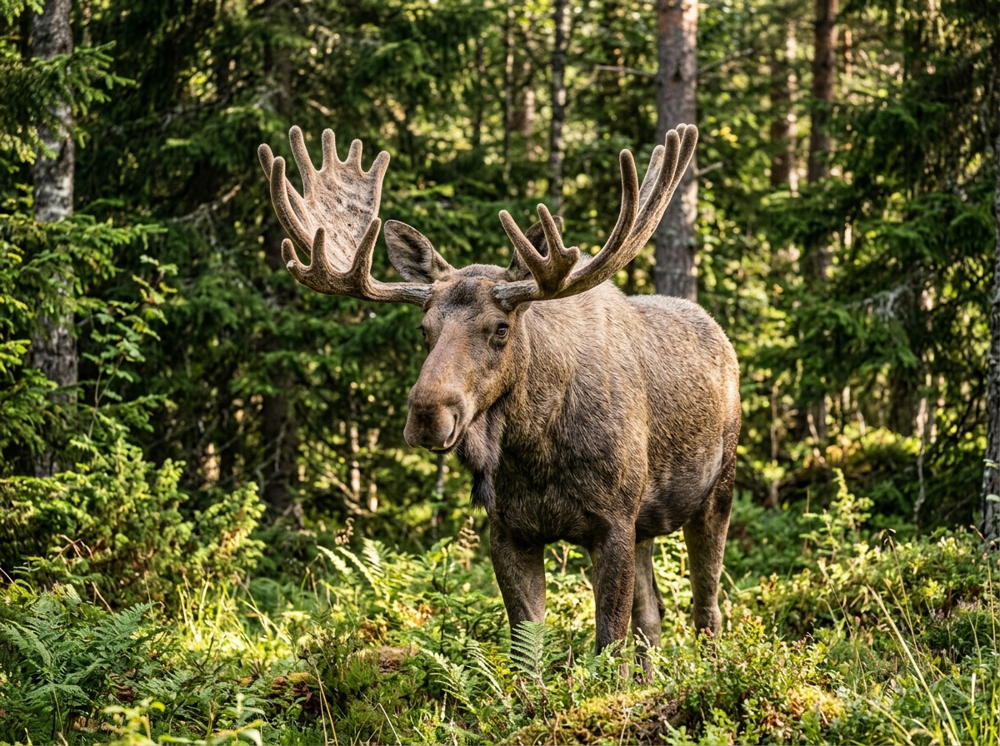
ElchDer Elch ist das größte Tier Norwegens. Er lebt in den großen Wäldern. Ein Elch kann bis zu 800 Kilogramm schwer werden. An seinem Kopf trägt er ein breites Geweih.
Grüne Wörter für die Appgrößtes Tierlebt im Waldsehr schwerbreites Geweih800 Kilogramm
RentierRentiere leben im Norden von Norwegen. Sie haben ein dickes Fell und kommen gut mit Kälte zurecht. Schon seit langer Zeit werden sie von den Samen gehütet. Auch die Weibchen tragen ein Geweih.
Grüne Wörter für die Applebt im Nordendickes Fellmag KälteSamen hüten sieGeweih
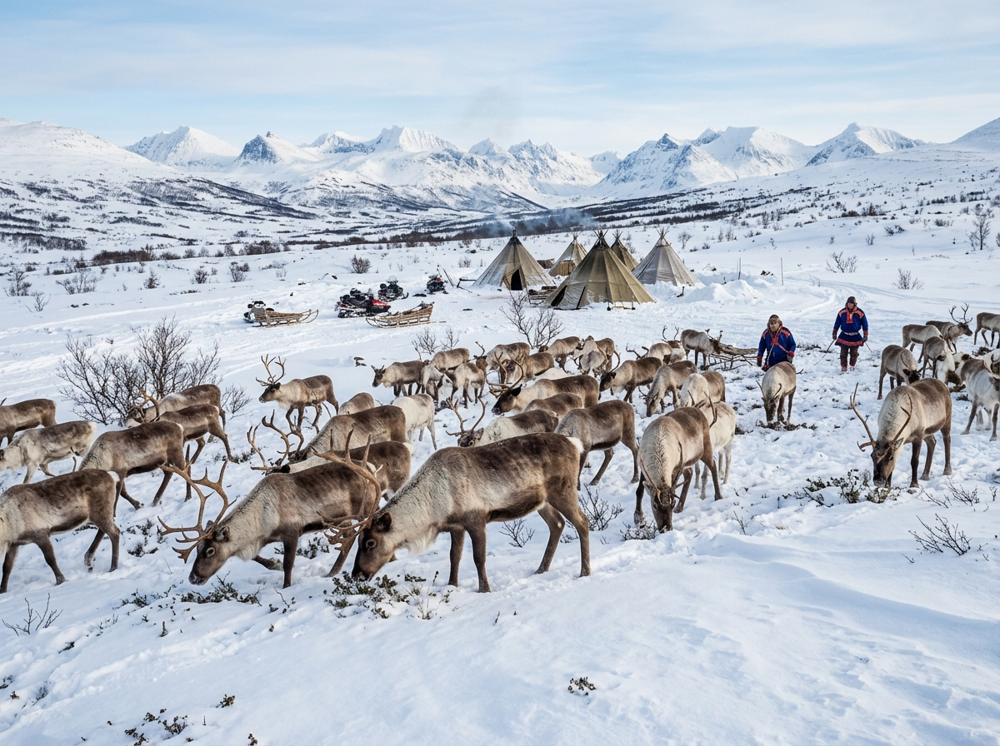
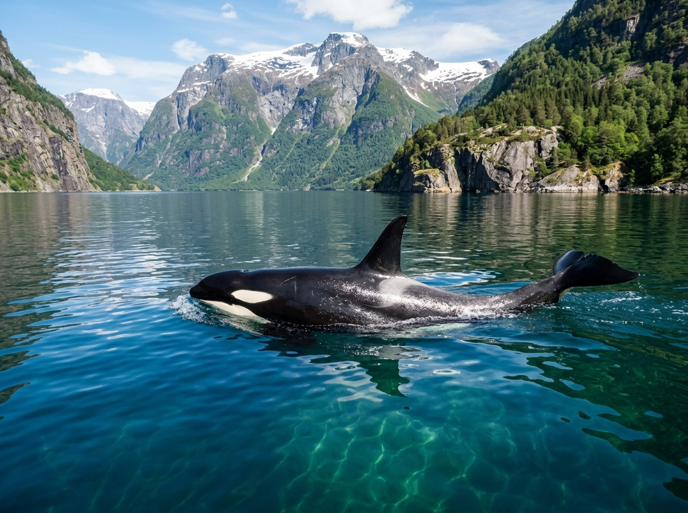
OrcaDer Orca ist ein großer Schwertwal. Er ist schwarz-weiß und schwimmt in den Fjorden vor der Küste. Besonders im Herbst und Winter kann man Orcas dort sehen. Sie jagen oft in Gruppen.
Grüne Wörter für die AppSchwertwalschwarz-weißin den Fjordenjagt in Gruppenim Winter
In der App kannst du beim Essen das Foto nehmen oder dein Gericht selbst malen.
LachsNorwegen ist eines der größten Lachsländer der Welt. Lachs ist ein rosafarbener Fisch aus dem Meer. Man isst ihn geräuchert, gekocht oder roh. Sehr beliebt ist Lachs auf Brot mit Butter.
Grüne Wörter für die Approsa Fischaus dem Meergeräuchertauf Brotsehr beliebt
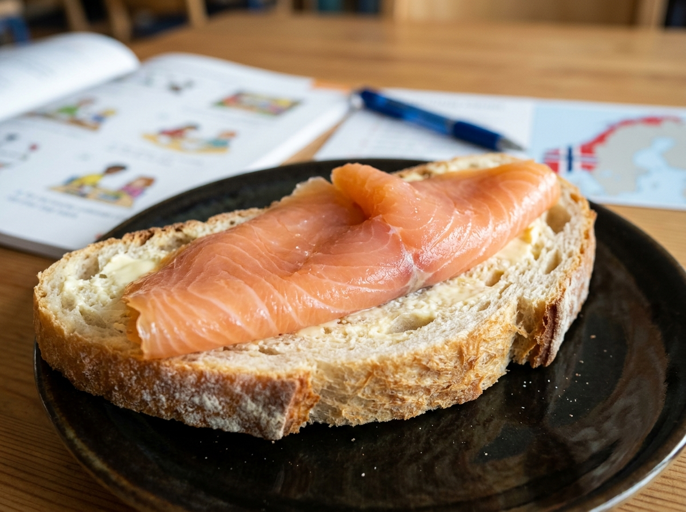
BrunostBrunost ist ein brauner Käse mit süßem Geschmack. Er sieht aus wie eine Scheibe Schokolade, schmeckt aber ganz anders. In Norwegen essen ihn viele Kinder zum Frühstück auf dem Brot.
Grüne Wörter für die Appbrauner Käsesüßer Geschmackwie Schokoladezum Frühstückaufs Brot
KjøttkakerKjøttkaker sind Fleischklößchen in brauner Soße. Sie sind ein klassisches Hausmannsessen. Dazu isst man oft Kartoffeln und Erbsen. Das Gericht macht satt und schmeckt warm am besten.
Grüne Wörter für die AppFleischklößchenbraune Soßemit Kartoffelnund Erbsenmacht satt
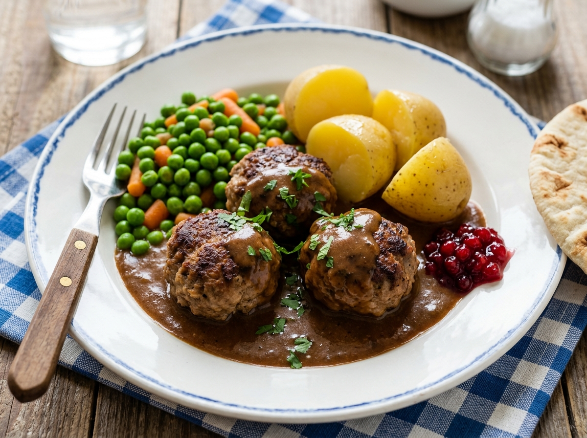
⚽ Gut zu wissen
Die Fußball-Nationalmannschaft von Norwegen spielt im rot-weißen Trikot. Im Ausland nennt man sie oft einfach Norway. Lange Zeit war Norwegen nicht bei einer WM dabei, die letzte Teilnahme war 1998. Jetzt ist das Team wieder stark und spielt 2026 bei der Weltmeisterschaft mit.
Grüne Wörter für die Approt-weißes Trikotlange nicht dabeijetzt wieder starkbei der WM 2026Erling Haaland
🌟 Profi-Wissen
Erling Haaland ist Norwegens größter Fußballstar. Er spielt beim englischen Club Manchester City und schießt extrem viele Tore. In seiner ersten Saison in England traf er über 50 Mal. Sein Vater Alfie Haaland hat früher auch in England gespielt.
Grüne Wörter für die AppErling HaalandManchester CityTormaschineüber 50 Tore in einer SaisonVater auch Profi
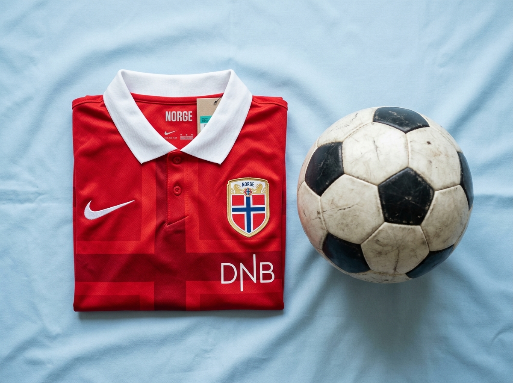
Schule in NorwegenIn Norwegen gehen die Kinder von Montag bis Freitag zur Schule, so wie bei uns. Sie starten meist ohne Noten in den ersten Jahren. Oft sind die Kinder viel draußen, auch bei Regen oder Schnee. Es gibt sogar Schulen mitten im Wald, das nennt man Naturschule.
Grüne Wörter für die AppMontag bis Freitagerst keine Notenviel draußenbei Regen und SchneeNaturschule
Leben in der NaturViele Familien in Norwegen lieben es, draußen zu sein. Das nennt man Friluftsliv, also Leben an der frischen Luft. Im Winter fahren schon kleine Kinder Ski und rodeln. An freien Tagen gehen Familien zusammen wandern oder zelten in der Natur.
Grüne Wörter für die AppFriluftslivfrische LuftSki fahrenim Winterwandern und zelten
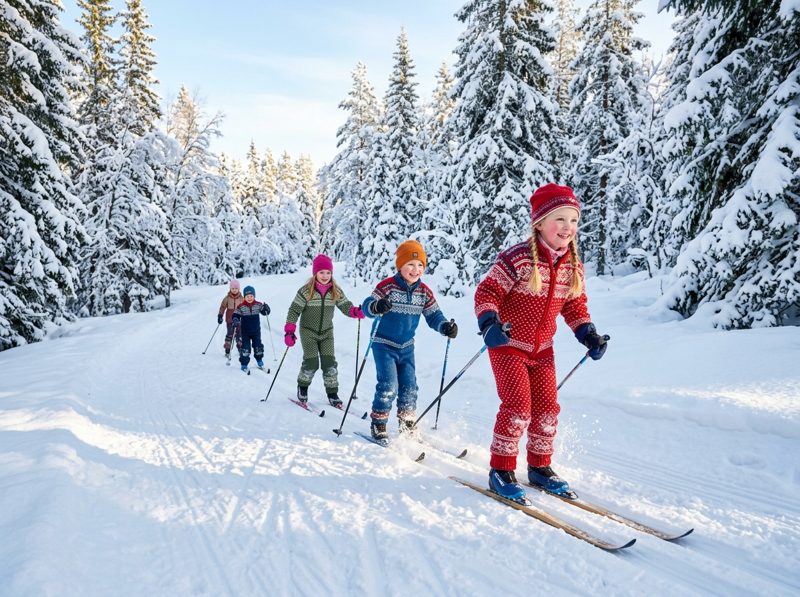